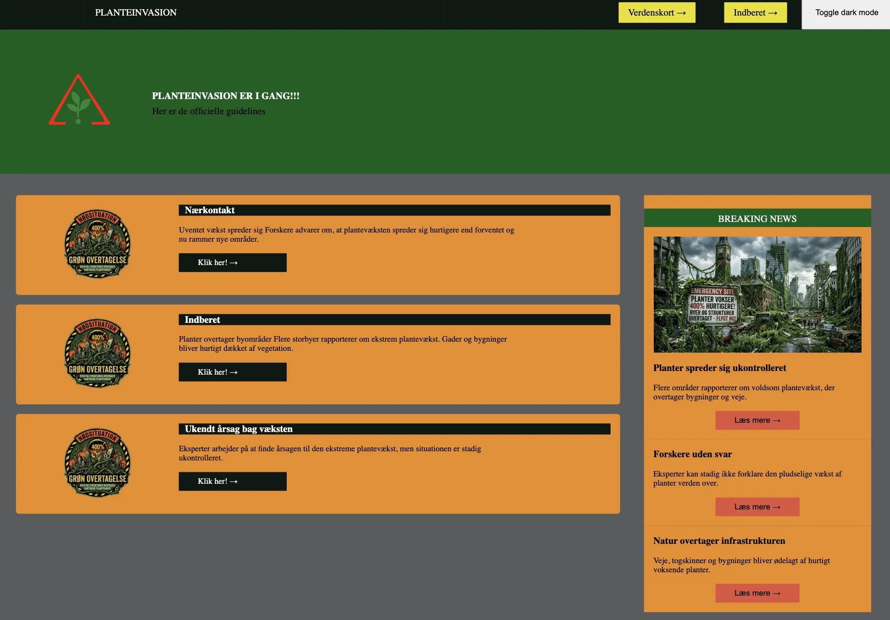

T04 - UX - DEV
MMD FORÅR 2026Løsning
I dette tema udviklede jeg et Emergency Site med konceptet "Planter overtager verden". Hjemmesiden skulle informere brugeren om situationen ved hjælp af infografik samt svg'er jeg selv lavede og indeholde interaktive funktioner ved hjælp af JavaScript.
Se projektet her ↓
MIT PROJEKT
Proces
Jeg udviklede først idéen og den visuelle identitet til projektet. Herefter byggede jeg hjemmesiden i HTML og CSS og implementerede JavaScript-funktioner samt formularer for at skabe interaktivitet. Undervejs arbejdede jeg med brugergrænseflader og funktionalitet.
Reflektion
Tema 4 introducerede mig til JavaScript og interaktive elementer på hjemmesider. Dette var et vigtigt skridt, da jeg nu kunne begynde at skabe mere dynamiske brugeroplevelser frem for kun statiske sider. Arbejdet med Emergency Site-projektet udfordrede mig til at kombinere kreativ historiefortælling med teknisk udvikling. Jeg oplevede, at JavaScript krævede en anden måde at tænke på end HTML og CSS, og der var flere situationer, hvor jeg måtte eksperimentere og fejlsøge for at få funktionerne til at virke korrekt. Temaet gav mig en større forståelse for, hvordan interaktivitet kan forbedre brugeroplevelsen, og hvordan formularer og brugerinput kan gøre en hjemmeside mere engagerende.